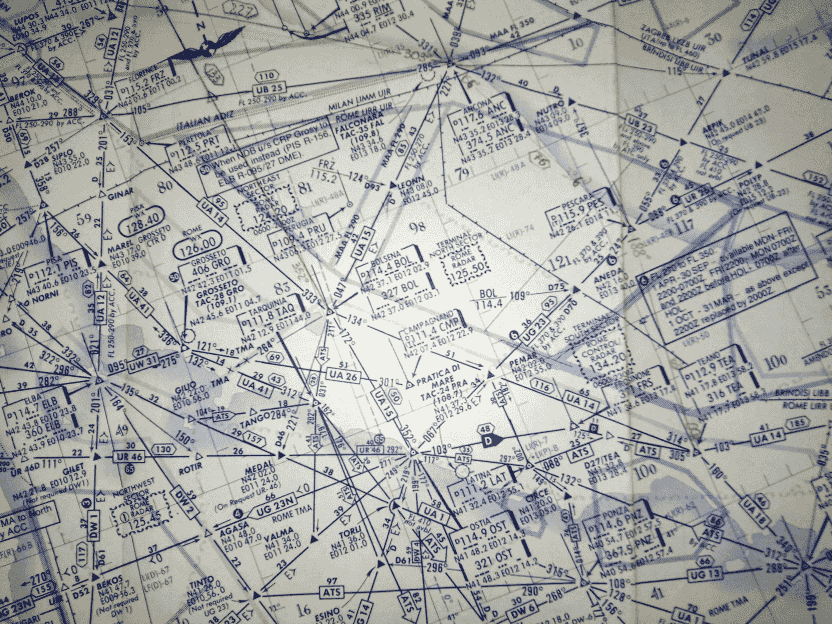
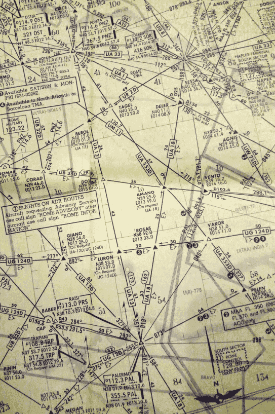

La cartina mostra che nella maggior parte dei casi i segmenti d'aerovia avevano una radioassistenza in entrambe le estremità.
In alcuni, rari, casi i segmenti erano formati da una radioassistenza e da un punto di riporto (triangolino vuoto o pieno).
Il triangolino pieno rappresenta un punto di riporto obbligatorio; quando un pilota ne sorvola uno, deve obbligatoriamente riportare il sorvolo al controllore: "=IH870= GOOD EVENING, 870 WE ARE MAINTAINING 290 AND APPROACHING PUMA" (PUMA è l'attuale PEMAR).
Se il punto di riporto è rappresentato da un triangolino vuoto, è il controllore a dover richiedere al pilota di riportarne il sorvolo; in mancanza di tale richiesta, il riporto non avviene.

Questa è la parte sud della rotta seguita dal DC-9.
Il punto BEROL (43 nm a sud di Ponza) era il punto A-13 ALFA.